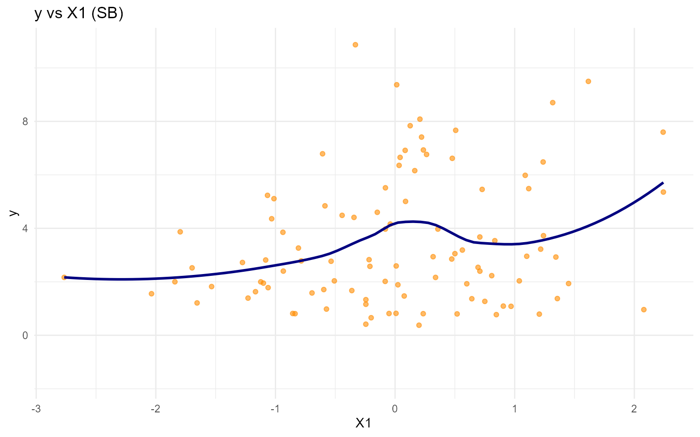
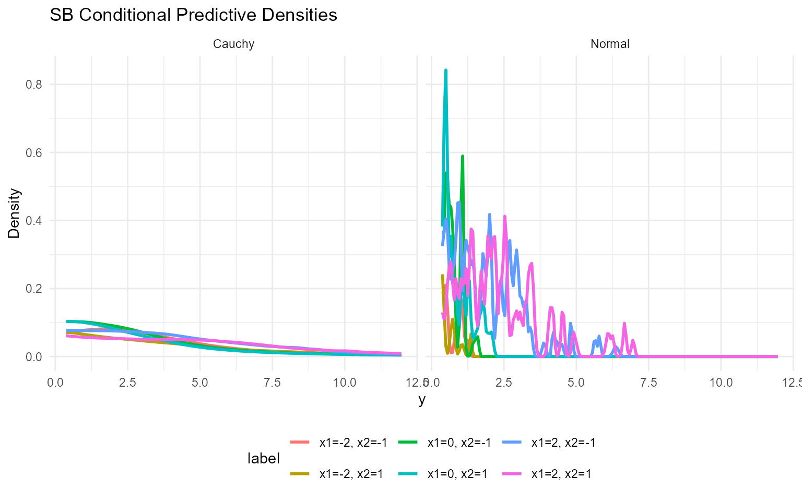
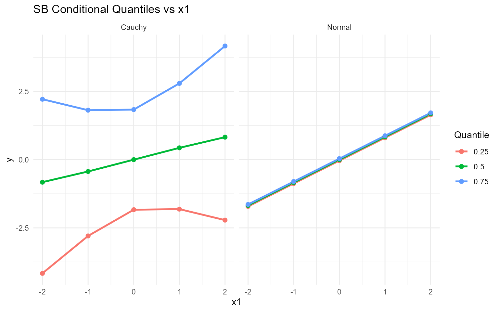
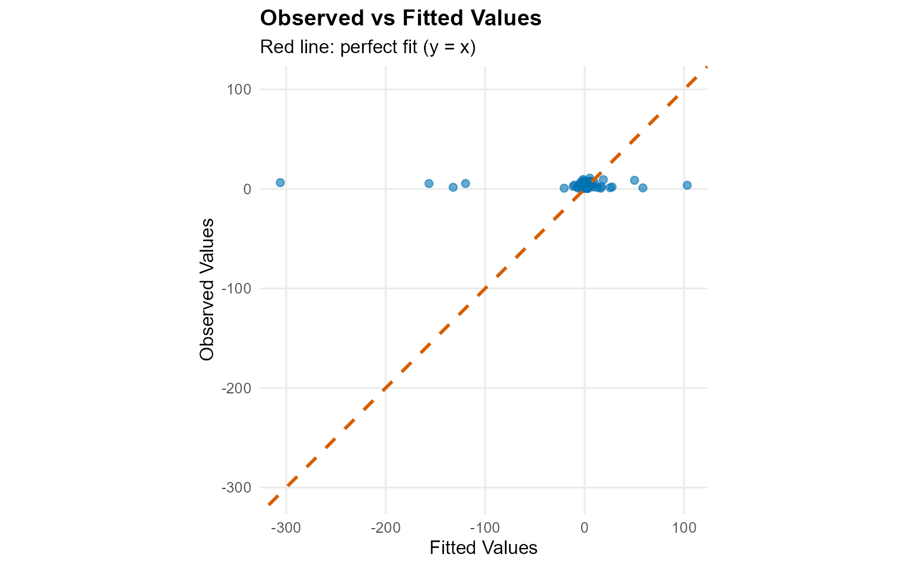
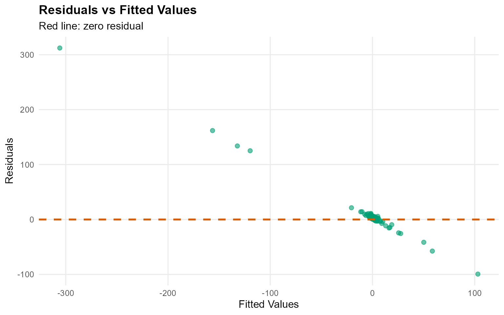
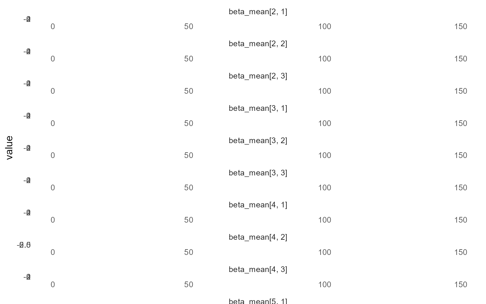
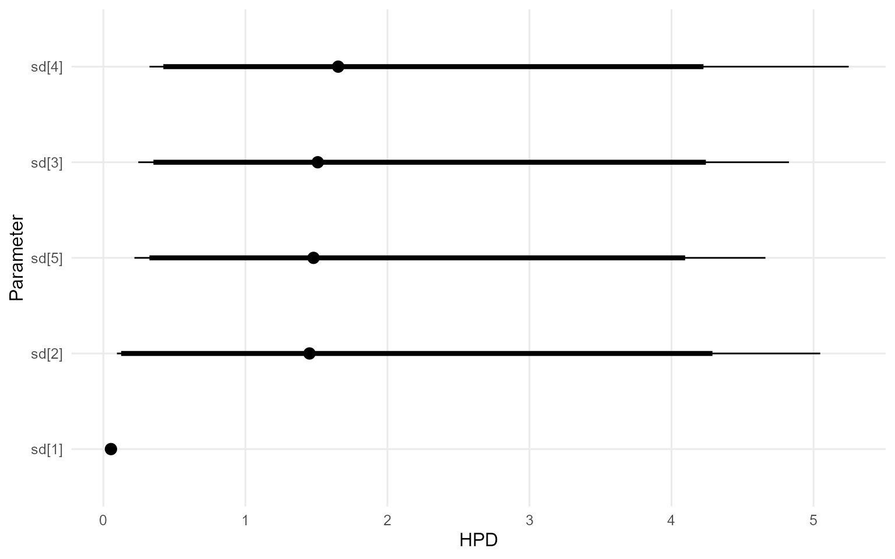
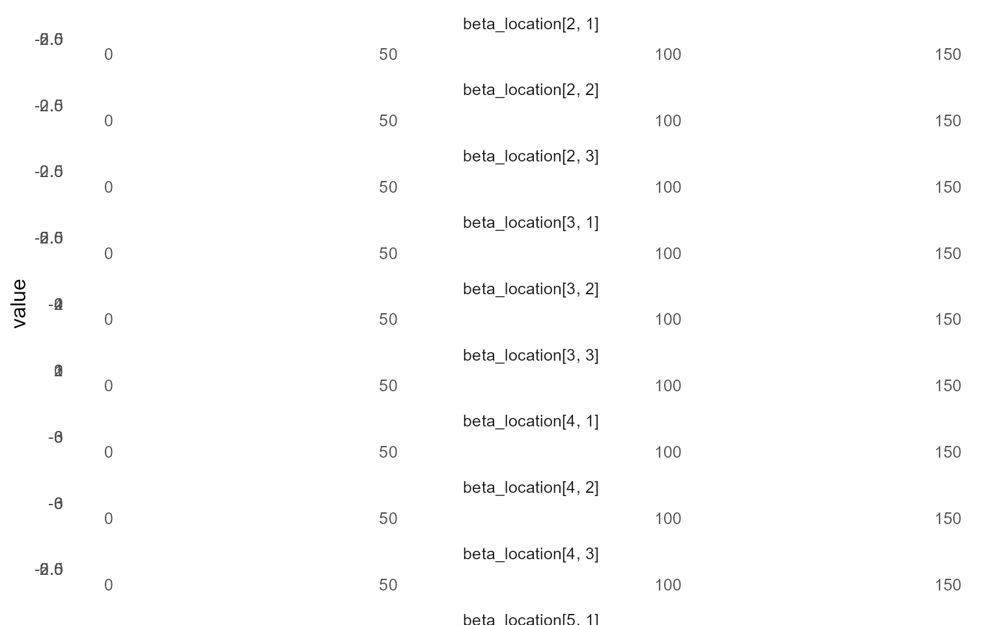
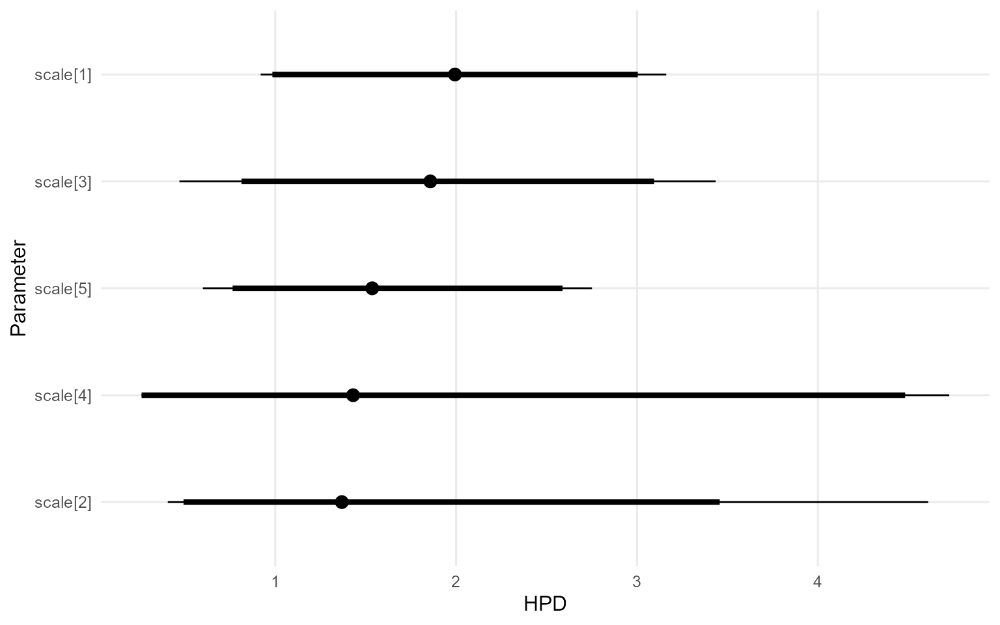

11. Conditional DPmix with Stick-Breaking Backend
Source:vignettes/cookbook/v11-conditional-DPmix-SB.Rmd
v11-conditional-DPmix-SB.RmdCookbook vignette (for the website / historical notes). These files may not match the current exported API one-to-one. Last verified: 2026-01-18.
For the up-to-date workflow, see the main package vignettes (Introduction, Model Spec, MCMC Workflow, Unconditional/Conditional/Causal, Backends, S3 Reference).
Theory (brief)
Conditional DP mixtures allow kernel parameters to depend on covariates, giving flexible regression-style distributions. The stick-breaking backend truncates the mixture to a fixed number of components.
Conditional DPmix: Stick-Breaking Backend
Purpose: Replace the CRP backend with stick-breaking
truncation while keeping the covariate-dependent bulk structure. This
demonstrates how fixed components interplay with
covariates.
Data Setup
data("nc_posX100_p3_k2")
y <- nc_posX100_p3_k2$y
X <- as.matrix(nc_posX100_p3_k2$X)
if (is.null(colnames(X))) {
colnames(X) <- paste0("x", seq_len(ncol(X)))
}
summary_tbl <- tibble(
statistic = c("N", "Mean", "SD", "Min", "Max"),
value = c(length(y), mean(y), sd(y), min(y), max(y))
)
ggplot(data.frame(y = y, x1 = X[, 1]), aes(x = x1, y = y)) +
geom_point(alpha = 0.6, color = "darkorange") +
geom_smooth(method = "loess", color = "navy", fill = NA) +
labs(title = "y vs X1 (SB)", x = "X1", y = "y") +
theme_minimal()
| statistic | value |
|---|---|
| N | 100.000 |
| Mean | 3.454 |
| SD | 2.406 |
| Min | 0.377 |
| Max | 10.870 |
Model Specification
bundle_sb_normal <- build_nimble_bundle(
y = y,
X = X,
kernel = "normal",
backend = "sb",
GPD = FALSE,
components = 5,
mcmc = mcmc
)
bundle_sb_cauchy <- build_nimble_bundle(
y = y,
X = X,
kernel = "cauchy",
backend = "sb",
GPD = FALSE,
components = 5,
mcmc = mcmc
)Running MCMC
fit_sb_normal <- load_or_fit("v11-conditional-DPmix-SB-fit_sb_normal", run_mcmc_bundle_manual(bundle_sb_normal))
fit_sb_cauchy <- load_or_fit("v11-conditional-DPmix-SB-fit_sb_cauchy", run_mcmc_bundle_manual(bundle_sb_cauchy))
summary(fit_sb_normal)MixGPD summary | backend: Stick-Breaking Process | kernel: Normal Distribution | GPD tail: FALSE | epsilon: 0.025
n = 100 | components = 5
Summary
Initial components: 5 | Components after truncation: 1
WAIC: 557.275
lppd: -243.03 | pWAIC: 35.608
Summary table
parameter mean sd q0.025 q0.500 q0.975 ess
weights[1] 0.81 0.129 0.48 0.825 1 4.525
alpha 1.275 0.724 0.346 1.138 2.937 26.667
beta_mean[1, 1] 0.839 0.674 -0.143 0.787 2.468 38.443
beta_mean[2, 1] -0.29 1.523 -3.093 -0.433 3.243 8.076
beta_mean[3, 1] 0.119 1.685 -3.157 0.6 2.795 12.208
beta_mean[4, 1] -0.085 1.64 -2.479 -0.435 3.255 16.761
beta_mean[5, 1] -0.103 1.192 -1.878 -0.377 2.716 16.102
beta_mean[1, 2] 0.108 0.773 -1.064 0.032 1.788 39.354
beta_mean[2, 2] -0.286 1.977 -4.361 0.064 3.231 5.473
beta_mean[3, 2] 0.319 1.74 -2.77 0.482 3.901 8.968
beta_mean[4, 2] -0.756 1.74 -3.657 -0.838 2.397 29.061
beta_mean[5, 2] -0.983 1.884 -3.459 -1.439 2.772 8.028
beta_mean[1, 3] 0.328 0.633 -0.868 0.21 1.943 26.597
beta_mean[2, 3] -0.749 1.493 -3.73 -0.591 1.768 6.438
beta_mean[3, 3] -0.711 1.664 -3.429 -0.741 2.547 15.724
beta_mean[4, 3] 0.662 1.233 -2.649 0.957 2.519 32.085
beta_mean[5, 3] 1.415 1.454 -1.67 1.579 3.639 17.512
sd[1] 0.054 0.01 0.036 0.053 0.073 112.333
summary(fit_sb_cauchy)MixGPD summary | backend: Stick-Breaking Process | kernel: Cauchy Distribution | GPD tail: FALSE | epsilon: 0.025
n = 100 | components = 5
Summary
Initial components: 5 | Components after truncation: 3
WAIC: 608.289
lppd: -250.281 | pWAIC: 53.864
Summary table
parameter mean sd q0.025 q0.500 q0.975 ess
weights[1] 0.439 0.091 0.3 0.42 0.64 9.896
weights[2] 0.283 0.057 0.167 0.29 0.37 11.716
weights[3] 0.183 0.056 0.09 0.17 0.293 8.184
alpha 1.911 1.122 0.522 1.663 4.689 26.383
beta_location[1, 1] -0.046 0.971 -1.707 -0.049 1.814 8.544
beta_location[2, 1] 0.409 1.988 -3.49 0.464 3.522 21.689
beta_location[3, 1] 1.567 1.814 -1.4 1.827 4.686 6.793
beta_location[4, 1] 0.705 2.333 -4.09 0.795 4.337 10
beta_location[5, 1] -0.684 1.004 -2.437 -0.67 1.589 11.242
beta_location[1, 2] -0.785 1.853 -3.938 -1.114 3.103 14.58
beta_location[2, 2] 0.389 2.294 -3.943 0.597 3.849 16.46
beta_location[3, 2] 0.377 1.407 -2.735 0.642 2.855 19.471
beta_location[4, 2] -0.287 2.07 -4.024 -0.135 3.44 23.622
beta_location[5, 2] -0.861 1.905 -3.746 -1.155 4.068 10.795
beta_location[1, 3] -0.804 1.118 -2.986 -0.86 1.004 12.234
beta_location[2, 3] 0.274 1.967 -3.563 0.495 3.655 15.622
beta_location[3, 3] 1.959 0.785 0.314 2.053 3.303 29.8
beta_location[4, 3] 0.078 1.877 -3.056 0.066 3.709 21.214
beta_location[5, 3] -0.554 1.324 -2.745 -0.52 1.55 5.984
scale[1] 1.999 0.518 1.101 1.961 3.019 48.5
scale[2] 1.93 0.703 0.779 1.861 3.332 53.699
scale[3] 1.523 0.757 0.47 1.36 3.577 53.635
params_sb <- params(fit_sb_normal)
params_sbPosterior mean parameters
$alpha
[1] "1.275"
$w
[1] "0.81"
$beta_mean
x1 x2 x3
comp1 "0.839" "0.108" "0.328"
comp2 "-0.29" "-0.286" "-0.749"
comp3 "0.119" "0.319" "-0.711"
comp4 "-0.085" "-0.756" "0.662"
comp5 "-0.103" "-0.983" "1.415"
$sd
[1] "0.054"Conditional Predictive Density
X_new <- expand.grid(x1 = seq(-2, 2, length.out = 3), x2 = c(-1, 1), x3 = 0)
colnames(X_new) <- colnames(X)
y_min <- max(min(y), .Machine$double.eps)
y_grid <- seq(y_min, max(y) * 1.1, length.out = 200)
densities_normal <- lapply(seq_len(nrow(X_new)), function(i) {
pred <- predict(fit_sb_normal, x = as.matrix(X_new[i, , drop = FALSE]), y = y_grid, type = "density")
data.frame(
y = pred$fit$y,
density = pred$fit$density,
label = paste0("x1=", round(X_new[i, "x1"], 1), ", x2=", X_new[i, "x2"]),
model = "Normal"
)
})
densities_cauchy <- lapply(seq_len(nrow(X_new)), function(i) {
pred <- predict(fit_sb_cauchy, x = as.matrix(X_new[i, , drop = FALSE]), y = y_grid, type = "density")
data.frame(
y = pred$fit$y,
density = pred$fit$density,
label = paste0("x1=", round(X_new[i, "x1"], 1), ", x2=", X_new[i, "x2"]),
model = "Cauchy"
)
})
df_cond <- bind_rows(densities_normal, densities_cauchy)
ggplot(df_cond, aes(x = y, y = density, color = label)) +
geom_line(linewidth = 1) +
facet_wrap(~ model) +
labs(title = "SB Conditional Predictive Densities", x = "y", y = "Density") +
theme_minimal() +
theme(legend.position = "bottom")
Quantile Drift with Covariates
X_eval <- cbind(x1 = seq(-2, 2, length.out = 5), x2 = 0, x3 = 0)
colnames(X_eval) <- colnames(X)
quant_probs <- c(0.25, 0.5, 0.75)
pred_q_normal <- predict(fit_sb_normal, x = as.matrix(X_eval), type = "quantile", index = quant_probs)
pred_q_cauchy <- predict(fit_sb_cauchy, x = as.matrix(X_eval), type = "quantile", index = quant_probs)
quant_df_normal <- pred_q_normal$fit
quant_df_normal$x1 <- X_eval[quant_df_normal$id, "x1"]
quant_df_normal$model <- "Normal"
quant_df_cauchy <- pred_q_cauchy$fit
quant_df_cauchy$x1 <- X_eval[quant_df_cauchy$id, "x1"]
quant_df_cauchy$model <- "Cauchy"
bind_rows(quant_df_normal, quant_df_cauchy) %>%
ggplot(aes(x = x1, y = estimate, color = factor(index), group = index)) +
geom_line(linewidth = 1) +
geom_point(size = 2) +
facet_wrap(~ model) +
labs(title = "SB Conditional Quantiles vs x1", x = "x1", y = "y", color = "Quantile") +
theme_minimal()
Residuals & Diagnostics


plot(fit_sb_normal, params = "mean", family = "traceplot")
=== traceplot ===
plot(fit_sb_normal, params = "sd", family = "caterpillar")
=== caterpillar ===
plot(fit_sb_cauchy, params = "location", family = "traceplot")
=== traceplot ===
plot(fit_sb_cauchy, params = "scale", family = "caterpillar")
=== caterpillar ===
Takeaways
- Stick-breaking component count is fixed but still supports covariate-dependent mixtures.
-
predict(..., type = "density")returns group-specific densities for eachX. -
predict(..., type = "quantile")reports posterior-mean quantiles; the median is the 0.5 quantile and shifts withx1. - Diagnoses rely on the same S3
plot()/fitted()pipeline available in other vignettes.